Alison Booth
Gaddis, Maxwell Pierson. Saintly Women and Death-Bed Triumphs: Original and Compiled from the Most Authentic Records. New York and Pittsburgh: Phillips & Hunt; Cincinnati, OH, and Chicago: Walden & Stowe, 1880.
See Clissold.On title page: Rev. Maxwell Pierson Gaddis, Sen.,/ (Author of "Foot-Prints of an Itinerant," "Brief Recollections," "Sacred/ Hour," "Conversion of a Skeptic," "Personal Experience,"/ "Last Words and Old-Time Memories."/With an introduction by/ Mrs. E. T Wells. Frontispiece (sole illustration): engraving of Mrs. Pheobe Palmer "Eng.d by H. B. Hall & Sons 13 Barclay St.N.Y." Entered in Library of Congress and printed by United Brethren Publishing House, Dayton, Ohio. Cover olive green cloth with blind stamped thistle and floral horizontal borders on back; on spine, the thistle leaves and floral pattern continue, highlighted in black; title and author's last name in slanting gold banners; on front cover, full length thistle and floral borders and the gold title and author's last name in golden slanting banners with large initial letters and vine-like outgrowths surrounding the words. Endpapers resemble floral wallpaper. Before the first chapter and at the conclusion before the index, hymnlike verse, some unattributed. In short, an attractive volume by contemporary standards of publishing. The introduction suggests that the 170 "brief biographical sketches of the deceased wives of pioneer Methodist traveling preachers" were collected over decades not only by Gaddis but by resolution of the Cincinnati Conference to provide obituaries of any wife or widow of a member (iii-iv).
Search OCLC WorldCat for this title.
Search Google Books for this title.
Galley, Lucile Vessot. Famous Women: Character Representation— An Historic Entertainment. Ottawa: n.p., 1916.
NOT:=drama. Intended “for the use of Societies,” a pageant, with directions and speeches. A judge asks, “Whom among them manifests the true ideal of womanhood? Who has rendered the greatest service to the world, and upon whom shall we confer the crown?” A long list mixing popular great names, national or occupational types, and even fictional characters, e.g.: Ruth; Queen Isabella of Spain; Grace Darling; Jenny Lind; Frances Willard; Joan of Arc; The Japanese Girl; Nordica; the Nun; the Indian Woman; the Salvation Army Girl; the Maid [as in house servant]; The Fish Wife; Miss Ophelia, Topsy, Eva; Mother Goose. See also Pop Chart
Search OCLC WorldCat for this title.
Search Google Books for this title.
Gardner, Rev. James. Memoirs of Eminent Christian Females: With an Essay on the Influences of Female Piety. Philadelphia: Lindsay & Blakiston, 1844. Edinburgh: Johnstone & Hunter, 1852.
TOC: Mrs. Susan Huntingdon; Mrs. Ann H. Judson; Mrs. Hannah More; Mrs. Isabella Graham; Mrs. Mary M. Ellis; Miss Caroline Elizabeth Smelt; Mrs. Margaret Wilson; Mrs. Harriet W.L. Winslow. *Pop Chart Also as Gardner's Memoir of Christian Females . .
Search OCLC WorldCat for this title.
Search Google Books for this title.
Gardner, J. E. Marriage and Maternity; or, Scripture Wives and Mothers. London: Kegan Paul, Trench, 1881.
Search OCLC WorldCat for this title.
Search Google Books for this title.
Garner, Leah Beach. Pioneer Women of Genesee County. [Flint, MI]: DAR, 1935.
HATHI Trust Digital Library version http://hdl.handle.net/2027/mdp.39015071338530 indicates a 50-pp. typescript "Prepared for the Genesee Chapter DAR." No table of contents; the text weaves names into narrative, and headers focus on towns. Mrs. Bert M. Garner begins, "The writer of this narrative has found it necessary to weave bits of history around the pioneer women of Genesee County and their families else not much of a paper would she have been able to produce. Not so much has been recorded about the women of that early day as about the men" (1).
Search OCLC WorldCat for this title.
Search Google Books for this title.
Gearey, Caroline. Daughters of Italy. London: Simpkin/Marshall, 1886.
TOC: Olympia Morata, and Anna of Este; Marie-Thérèse of Savoy (Princesse de Lamballe); Julietta, Marchioness of Barolo.
Search OCLC WorldCat for this title.
Search Google Books for this title.
Gearey, Caroline. Three Empresses. London: Digby & Long, 1893; 1894.
TOC: Josephine; Marie-Louise; Eugenie.
Search OCLC WorldCat for this title.
Search Google Books for this title.
Gearey, Caroline. Two French Queens, and Other Sketches. London: Digby & Long, 1896.
Gearey is "Author of 'Three Empresses,' 'In Other Lands,' 'Daughters of Italy,' 'French Heroines,' Etc." on title page. "With Portraits" also stated on title page, but apparently only "Madame Royale" facing page 255, that is, Marie-Therese, Duchess of Angouleme, and the frontispiece of Marguerite of Valois with Latin inscription. No sign that plates have been cut out. Dedication: "To/ My Beloved Friends/Mr. and Mrs. C. de Bels Brounie/This Book/ (Written Partly Within the Walls of Their Beautiful/ Home)/ Is Affectionately Dedicated" (small caps apart from "To" in gothic style). Concludes, after 341 pages, with notices of Gearey's works followed by 16-pp. advertisement of Digby, Long publications dated 1896. Each chapter begins with an "Index" that summarizes the biography in short "header" style, e.g. "Marguerite six years old at her father's death" (n.p.), often naming people or places appearing in the life. Appears to have been acquired by Harvard College 8 February 1899; its record of borrowing includes dates from 1908 through 1957. Pages brown, half-calf Harvard University Library binding rough at edges and permanently somewhat ajar. Interlibrary loan restricted to reading in library.
TOC: Elizabeth of Valois and Marguerite of Valois; Laura Mancini, Duchess of Mercoeur; Olympia Mancini, Countess of Soisson; Marie Mancini, Princess of Colonna; Hortense Mancini, Mazarin; Marie-Anne Mancini, Duchess of Bouillon; Charlotte Corday; Adrienne de Lafayette; Marie-Therese, Duchess of Angouleme.
Chapter titles: Two Queens: Elizabeth of Valois (1545-1568) Marguerite of Valois (1553-1615); A Cardinal's Nieces (1635-1714); "L'Ange de l'Assassinat" (1768-1793); The Heroine of Olmutz (1759-1807); A Sorrowful Daughter (1778-1851).
Search OCLC WorldCat for this title.
Search Google Books for this title.
Gerard, Frances A. Some Celebrated Irish Beauties of the Last Century. London: Ward & Downey, 1895.
TOC: Introduction-Mary Molesworth, Countess of Belvedere; Eleanor Ambrose, “the Dangerous Papist”; The Gunnings; Maria, Countess of Coventry; Elizabeth, Duchess of Hamilton and Argyll; Mrs. Travis and the Other Two Daughters; General Gunning and the Story of His Daughter Gunilda; Peg Woffington; Dorothea Monroe; The Three Miss Montgomerys; Elizabeth La Touche, Countess of Lanesborough; Anne Luttrell, Duchess of Cumberland; The Romance of the Coghlans of Ardo; Miss Farren, Countess of Derby; Appendix; Index.
Search OCLC WorldCat for this title.
Search Google Books for this title.
Gerard, Frances A. Some Fair Hibernians: Being a Supplementary Volume to Some Celebrated Irish Beauties of the Last Century. London: Ward & Downey, 1897.
TOC: Dorothea Jordan; Lady Anne and Lady Gertrude Fitzpatrick; Mary Birmingham, Countess of Leitrim; Anne Birmingham, Countess of Charlemont; Sarah Curran; Melesina Chenevix Trench; Marguerite Power, Countess of Blessington; Sydney Owenson, Lady Morgan; and Olivia Owenson, Lady Clarke; Caroline Elizabeth Sheridan, Mrs. Norton, Afterward Lady Stirling-Maxwell of Keir; Eliza O'Neill, Lady Wrixon Becher; Marie Dolores Gilbert, Lola Montez.
Search OCLC WorldCat for this title.
Search Google Books for this title.
Gibson, Ellen E. The Godly Women of the Bible. New York: Truth Seeker, 1881.
Titlepage: “by an ungodly woman of the 19th century” (i.e. Gibson). Also listed under Ella P. Gibson.
TOC: Introduction; Sarah; Mrs. Lot and Her Nameless Daughters; Rebekah; Leah and Rachel; Tamar; Divers Women; Rahab the Harlot; Various Godly Women; The Levite's Concubine; Naomi and Ruth; Hannah; Michal; Abigail; Bathsheba; Tamar, the Sister of Absalom; The Ten Concubines; Abishag and Bathsheba; Elijah's and Elisha's Women; Jezebel; Athaliah and Huldah; Queen Vashti and Esther; Mrs. Job and Hosea's Questionable Women; Elizabeth and Mary; The Virgin Mary; Genealogy of the Virgin Mary; The Sisters of Lazarus; The Anointing Scenes; Five Women: Mary Magdalene, Joanna, Susanna, "The Other Mary," and Salome; Four More Women: The Woman of Samaria, The Woman Taken in Adultery, Herodias, and Her Daughter Salome; Sundry Women: Sundry Nameless Women Healed and Comforted by Jesus; The Apostolic Women; Conclusion.
Search OCLC WorldCat for this title.
Search Google Books for this title.
Gilchrist, Annie Somers. Some Representative Women of Tennessee. Nashville: McQuiddy, 1902.
TOC: Mrs. Benton McMillin; Mrs. Julia Peete Bate; Mrs. John C. Brown; Mrs. Benjamin F. Wilson; Mrs. Laura Lavender Baxter; Mrs. Horace Harmon Lurton; Mrs. Mary Hunter Pierce; Mrs. Emma Etheridge Moran; Mrs Leslie Warner; Mrs. Robert M. Lea; Mrs. Judith Winston Pilcher; Mrs. Florence Kirkman Drouillard; Mrs. Emma Louise Ashford; Miss Louise Gerding; Mrs. Charles A. Garratt; Mrs. Julia E. Diboll Steen; Mrs. Lawrence Davis Tyson; Mrs. John Yates Johnston; Mrs. Mary Irby Dupre; Mrs. Edmund B. Teachout; Mrs. William Keeling Phillips; Mrs. George W. Martin; Mrs. Granville P. Rose; Miss Mary Boyce Temple; Mrs. Jennie Craighead Buntin; Mrs. Mary Coldwell Evans; Mrs. Martha Dillon Lester; Mrs. Sarah Ewing Gaut; Mrs. Mary Hannah Johnson.
Search OCLC WorldCat for this title.
Search Google Books for this title.
Gilder, Rosamund. Enter the Actress: The First Women in the Theatre. London: Harrap; Boston and New York: Houghton Mifflin, 1931.
TOC: From Priestess to Prostitute: The Greek and Roman Stage; Hrotsvitha, A Tenth-Century Nun: the First Woman Playwright; The Commedian Appears: The First Actresses in Italy; Isabella Andreini: Europe’s Prima Donna Innamorata; From Saltimbanque to Tragadienne: The Pioneer Acresses of France; Madeline and Armande Bejart: Moliere’s Mistress and his Wife; Enter Ian The Veil’d: The First Acress in England; Mary Betterton and the Restoration Acresses; Aphra Behn: England’s First Professional Woman Playwright; Carolina Neuber: Germany’s Pioneer Actress-Manager; La Montansier: A Directress Under Marie Antoinette and the Revolution; Madame Vestris: The First Lessee Lady of the English Stage.
Search OCLC WorldCat for this title.
Search Google Books for this title.
Gillogly, Mrs. L. L., A Sketch of the Women of Utah: Read Before the Anti-Rust Literary Club, Macon, MO, April 29, 1891. Macon, GA: Republican, 1891.
Cover title./ “Published by request of friends.”/ “Very few Mormons are not happy that polygamy has been abandoned.”
Search OCLC WorldCat for this title.
Search Google Books for this title.
Gilman, Agness Geneva, Gertrude Marcelle Gilman. Who's Who in Illinois: Women-Makers of History. Chicago: Eclectic, 1927.
Lists approximately 150 women from Illinois in alphabetical order, with one-to-two page biographies of each. The table of contents divides the women up by their hometowns, listed alphabetically. A plurality of the women listed are from Chicago. The entries are alphabetical by last name; married names appear like others in capital letters, with the personal name in smaller caps below, e.g. Mrs. Laurence Marcellus Larson/ Lillian May Dodson Larson (138). Biographies are from two paragraphs to less than two pages long; a standard structure is a paragraph on significant occupation and accomplishment, a paragraph on parentage, education, training, husband and children if any, and perhaps short notice in a final paragraph on memberships or activities. The entries conclude with the present "Address:"; this may get down to the house number. Jane Addams appears early in the list; many of the women are teachers, administrators, academics, writers (including genealogy and history), musicians, some lawyers and politicians. Some are European immigrants, and some Jews are included (199). (The addresses are within blocks or even houses of where Alison Booth grew up!) A sticker on the inside front cover displays a fireplace with ornate mantel set into wood-panelled walls, flanked by the U.S. and Illinois flags on ornamented stands; this plate is inscribed "Property of/ The Chapter House Corporation/ of the Daughters of the American Revolution/ of the District of Columbia." A blue ink inscription on the facing free endpaper first began "Presented," the word crossed out and "Written inserted above to read: "Written by/ Agnes Geneva Gilman/ and/ Gertrude Marcelle Gilman/ 1927" and "Presented by/ Mrs. Helen Orr Watson,/ Susan Riviere [Risier?] Hetzel Chapter."
Search OCLC WorldCat for this title.
Search Google Books for this title.
Gilmore, Rose Long. Davidson County Women in the World War, 1914-1919. Nashville: Advisory Council; Foster & Parkes, 1923.
Large, glossy, expensively produced book. Many individual photographs of women mentioned, as well as many group photographs. Some pages, under running headers of the title of the book, list in no evident order "each fallen hero of Davidson County in the World War" (14). Organized by groups women were members of, such as "War Work Council, Southern Presbyterian Church" and "Department of Woman's Work, Nashville Chapter, A.R.C." Lists thousands upon thousands of women. Many black and white photographs of groups and individuals and some three-color or red-and-grey-scale illustrations such as banners and posters. "Miss Ellen Stokes as she appeared as 'Joan of Arc,' n the French Independence Day Parade, in Nashville, July 14, 1918," reads the caption on the full-page profile portrait of an armored mailden on horseback (441). "World War Work of Colored Women of Davidson County," with group portrait and a single portrait, fills two and a half pages at the very end; it also features a group portrait captioned "Charter Members of Fisk University Auxiliary, Nashville Chapter, A. R. C." with list of names of those seated and knitting (507-9). Index.
Search OCLC WorldCat for this title.
Search Google Books for this title.
Gleichen-Russwurm, Alexander Freiherr von. The World's Lure: Fair Women, Their Loves, Their Power, Their Fates. Translated by Hannah Waller. New York and London: Knopf, 1927.
TOC: Introductory: Beauty and Dæmony of Woman; Queens of Love and Courtesans: Lais of Corinth; Clodia, the Lesbia of Catullus; Cleopatra; Theodora; Fredegrunde; Fiammetta's Protoype; Tullia d'Aragona; Diane de Poitiers; Barbara Blomberg; Marguerite de Valois; Nell Gwyn; Ninon de Lenclos; Athenais, Marquise de Montespan; Wilhelmina von Gravenitz; Jeanne Poisson, Marquise de Pompadour; Julie de Lespinasse; Pauline Bonaparte; Mademoiselle Georges; Marquise de Paiva; The Red Tsaritza. .
Search OCLC WorldCat for this title.
Search Google Books for this title.
Glover, [Elizabeth Rosetta Scott], Lady. Great Queens: Famous Women Rulers of the East. Edited by Rosetta M. Fairfax. London: Hutchinson, 1927; [1928].
No publication date. Red cloth binding. "Dedicated to my dear little Granddaughter Benita" in small caps. Epigraph from Maurice Baring: "Nevertheless new cities shall arise and new shapes of beauty, and son that shall seem to the hearers immortal, until the world itself shall end. And when the word is ended there shall be new worlds, and these too shall live and die, eternal and punctual, even as the blossoms of spring." Foreword dated November 12, 1927, by Rosetta Fairfax, pp. 7-9: "It has been a labour of love to write a foreword for this last book of my dear mother. The MS. was in Messrs. Hutchinson's hands when she passed away peacefully on February 8th of this year....[T]he modern practice of having books written by paid professionals is one which I find repellent....In the last few months of her life my mother was disappointed at her inability to get photographs of some of the various Queens of whose lives she was writing" (7). Fairfax leaves the text largely unaltered, adds photographs, and apologizes for the many unattributed quotations in her mother's biographies "compiled from rough notes" of books Fairfax has been unable to retrieve (8-9). Author's Note: the book was written to refute the idea "that women have never accomplished anything really great in any branch of the world's work. In England this may have been true to a certain extent prior to the passing of the Married Women's Property Act of 1870" (11). Her selection of Eastern women "have been chosent" to show "to what heights the women of the Asiatic, African, and Polynesian races can rise, given the opportunity, though they are frequently rather disparagingly spoken of as 'poor down-trodden Orientals' or 'natives'" (12). Preface ostensibly by Glover: "...I have discarded mere tradition as far as possible, and the following sketches of the lives of notable women rulers are founded on fact....I have been most forcibly struck by the colossal importance of the female throughout Nature." Motherhood warrants woman's "responsibility." A long paragraph attests to the intelligence of the elephant, and dominance of "the Queen Elephant," followed by a short rhetorical question/paragraph on the queen bee. History shows "how notably prosperous Britain has always been under the sovereignty of a Queen" (16). Contents organized under India, China, Japan, Palmyra, Assyria, Egypt, Ethiopia, Abyssinia, New Zealand, Hawaii, South Sea Islands. Those named Begam in the table of contents are listed under "The Rulers of Bhopal." Eleven portraits, including frontispiece of The Dowager Empress of China. The prose of the biographies is unremarkable modern historical narrative. "It is difficult to understand the Oriental mind and its outlook on life, so imbued is it with the spirit of the past, with ritual, and with superstitions absolutely unthinkable by the practical and progressive European.... little can be really known of the inner workings of a country like China" (147). The queens are portrayed in a positive light.
TOC: Queen Chand; Lakshmi Bai, Rani of Jhansi; Kudsia Begam; Nawab Sikander Begam; Nawab Shah Jahan Begam; H.H. Nawab Sultan Jahan Begam, G.C.S.I., G.C.I.E.; H.H. the Maharanee of Gwalior; H.H. the Maharanee of Cooch Behar; H.H. the Maharanee of Travancore; The Dowager Empress (I) of China; The Dowager Empress (II) of China; Empress Jingo Kogu; Queen Zenobia; Queen Semiramis; Queen Hatshopsouito; Magda, Queen of Sheba; Empress Zauditu; Ahumai; Kaahumanu, or Feather-Mantle; Liliuokalani; Salote, Queen of Tonga; Queen Emma.
Search OCLC WorldCat for this title.
Search Google Books for this title.
Goldsmith, M. L. Seven Women Against the World. London: Methuen, 1935.
TOC: Charlotte Corday; Théroigne de Méricourt; Flora Tristan; Louise Michel; Vera Figner; Emma Goldman; Rosa Luxemburg; “Is There a Revolutionary Type?” (final ch.).
Portraits of “women revolutionaries,” “fanatics in the best sense of the word” though Charlotte Corday “was a crank” (vii-viii).
Search OCLC WorldCat for this title.
Search Google Books for this title.
Gollock, G. A. Daughters of Africa. London and New York: Longmans, Green, 1932. New York: Negro Universities, 1969.
Chapter titles: Queens in Two African Lands; African Queens and Woman Chiefs; In the Heart of Tribal Africa; The Aro Midwife and the Toro Witch; Changing Africa; Preparation for Life; Married Life and Mothering; Two Tales; Teaching Young Africa; Ministers of Health; Social Service; The Future of Daughters of Africa.
Search OCLC WorldCat for this title.
Search Google Books for this title.
Good, James Isaac. Women of the Reformed Church. [Philadelphia?]: Sunday School Board of the Reformed Church in the United States, 1901.
Title page describes author as Professor of Dogmatics and Reformed Church History in the Ursinus School of Theology. The preface explains that the chapters of the book first appeared in the Reformed Church Magazine and were so warmly received that the Sunday-school Board of the Reformed Church in the United States republished them in this book. Good concludes his preface by saying he hopes "the lives of these Reformed saints will stimulate the ladies of our Church to greater interest in our splendid Church history, and to greater activity as in missions and the practical work of the Church, in which they already excel."
TOC: Anna Reinhard; Idelette D'Bures; Anna Bullinger; Catharine Zell; Margaret Blaarer; Queen Margaret of Navarre; Queen Jeanne D'Albret of Navarre; Charlotte D'Mornay; Phillipine de Luns; Charlotte D'Bourbon; Louisa de Coligny; Duchess Renee of Este; Olympia Morata; Electress Elizabeth; Electress Louisa Juliana; Landgravine Amalie Elizabeth; Countess Ursula; Countess Gertrude; Duchess Catharine Charlotte; Princess Elizabeth; Electress Louisa Henrietta; Countess Susan Rakoczy; Anna Lavater; Anna Schlatter and Meta Heusser-Schweitzer; Mrs. Thomas C. Doremus.
Search OCLC WorldCat for this title.
Search Google Books for this title.
Goodrich, Frank Boott. Women of Beauty and Heroism: From Semiramis to Eugenie: A Portrait Gallery of Female Loveliness, Achievement, and Influence. New York: Derby & Jackson, 1859; 1861; 1879-80.
See How To Make It as a Woman, 169, 262.
TOC: Semiramis; Penelope; Cornelia; Zenobia; Beatrice; Joan D'arc; Isabella; Diana de Poitiers; Anne Boleyn; Mary, Queen of Scots; Pocahontas; Nell Gwynn; Lady Mary Wortley Montagu; Marie Antoinette; The Maid of Saragossa; Anne Hasseltine Judson; Charlotte Bronte; Victoria; Eugenie.
Also published as World-Famous Women with same subtitle, New York, 1858. Note reprint variations below.
---. World-Famous Women: a Portrait Gallery of Female Loveliness, Achievement and Influence, From Semiramis to Eugenie. Philadelphia: Moore, 1871. With subtitle: Being Phototypes of Female Heroism, Beauty, and Influence, from the Earliest Ages to the Present Time. Philadelphia: Ziegler, 1879. ---. World-Famous Women: Types of Female Heroism, Beauty, and Influence, from the Earliest Ages to the Present Time. Illustrated by Edwards, Hall, McGoffin, Hollyer, Mote, Rogers, and Staal, from Original Designs by Champagne, Wanderforde, and Staal. Philadelphia: Ziegler, 1880. [n. p.]: Publishers' Union, 1891.Fourteen illustrations and twenty subjects (adds Cleopatra to above). See Meyers.
-
 Semiramis
Semiramis -
 Penelope
Penelope -
 Cornelia
Cornelia -
 Zenobia
Zenobia -
 Beatrice
Beatrice -
 Joan Darc
Joan Darc -
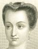Diana de Poitiers
-
Anne Boleyn
-
 Lady Mary Wortley Montagu
Lady Mary Wortley Montagu -
 Anne Hasseltine Judson
Anne Hasseltine Judson -
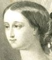Eugenie
-
 Pocahontas
Pocahontas -
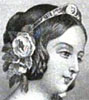Victoria
-
 Cleopatra
Cleopatra
Search OCLC WorldCat for this title.
Search Google Books for this title.
Goodrich, Samuel Griswold. Lives of Celebrated Women. Boston: Thompson, Bigelow & Brown; Taggard & Thompson, 1843. Philadelphia: Thomas, Cowperthwait, 1844; 1846. Boston: Hickman, 1844; Thompson & Brown, 1845. Subtitle variant: Lives of Celebrated Women: By the Author of Peter Parley's Tales. 2 vols. New York: Allen, 1844. Boston: Bradbury & Soden, 1844. 1 vol. New York: J. Allen, 1844. Boston: Pierce & Rand, 1848; Rand & Mann, 1849; Rand, Cornhill & Reynolds, 1852; 1853; 1854; 1856; Rand & Reynolds, 1855; Rand & Avery, 1856; Bradbury & Soden, 1856; Higgins & Bradley, 1856; 1857; Taggard & Thompson, 1864; Locke, 1876.
TOC: Lucretia and Margaret Davidson; Mrs. Adams; Mrs. (Martha) Washington; Mme de Stael; Lady Hester Stanhope; Hannah More; Mrs. Barbauld; Mme de Genlis; Josephine; Marie Antoinette; Mme Roland; Mme de Sevigne; Mary, Queen of Scots; Elizabeth, Queen of England; Isabella of Spain; Joan of Arc. .
See Louise Cochelet, Celebrated Women , and Celebrated Women [anon.] 1890.


Search OCLC WorldCat for this title.
Search Google Books for this title.
Goodsell, Willystine, ed. Pioneers of Women's Education in the United States: Emma Willard, Catherine Beecher, Mary Lyon. New York and London: McGraw, 1931.
British Library.
Search OCLC WorldCat for this title.
Search Google Books for this title.
Gordon, Lydia L. From Lady Washington to Mrs. Cleveland. Boston: Lee & Shephard; New York: Dillingham, 1888; 1889.
TOC: Lady Washington; Mrs. John Adams; Mrs. Jefferson; Mrs. Madison; Mrs. Monroe; Mrs. John Quincy Adams; Mrs. Jackson; Mrs. Van Buren; Mrs. Harrison; Mrs. Letitia Christian Tyler, Mrs. Julia Gardiner Tyler; Mrs. Polk; Mrs. Taylor; Mrs. Fillmore; Mrs. Pierce; Miss Lane; Mrs. Lincoln; Mrs. Johnson; Mrs. Grant; Mrs. Hayes; Mrs. Garfield; Mrs. Arthur; Mrs. Cleveland.
Search OCLC WorldCat for this title.
Search Google Books for this title.
Gordon, John Campbell, Ishbel Maria Gordon [Marquess and Marchioness of Aberdeen and Temair] with illutrations by Harold Copping. The Women of the Bible. London: Religious Tract Society, 1927; Lutterworth, 1937.
TOC: Hagar; Rebekah; Rachel; Pharaoh's Daughter; Delilah; Naomi; Ruth; The Widow of Zarephath; Jezebel; The Shunammite Woman; Esther; Mary the Mother of Jesus; The Woman of Samaria; The Woman with the Box of Ointment; Elisabeth; The Widow of Nain; Martha and Mary; The Woman of Canaan; The Woman Who Touched the Hem of His Garment; Mary Magdalene; The Women at the Sepulchre; Lydia of Thyatira; Priscilla.
The short preface signed "Aberdeen and Temair/ Ishbel Aberdeen and Temair" indicates that the prose "notes" were "to accompany" Copping's "series of pictures." At the beginning of each chapter, on the left-hand page (and as frontispiece), there is a grey-scale reproduction on glossy paper of one of Copping's dramatic Orientalist color paintings (hints of Leighton's style), scenes from the life of the Biblical woman the chapter is describing, with a narrative caption. Copping was a popular illustrator of the Bible and of children's books.
Search OCLC WorldCat for this title.
Search Google Books for this title.
Gracey, Annie Ryder [“Mrs. J. T. Gracey”]. Eminent Missionary Women. Introductory notes by Mrs. Joseph Cook and Mrs. S. L. Keen. New York: Eaton & Mains; Cincinnati, OH: Curts & Jennings; Chicago: Missionary Campaign Library; London: n.p., 1898.
TOC: Mary Lyon; Mrs. T.C. Doremus; Fidelia Fiske; Mrs. R.B. Lyth; Ann Wilkins; Mary Louisa Whately; Melinda Rankin; Lydia Mary Fay; Mary Briscoe Baldwin; Mrs. Bishop Gobat; Miss Aldersey; Mrs. H.C. Mullens; Mrs. Bowen Thompson; Miss Sophia Cooke; Miss Charlotte Maria Tucker; Miss Mary Reed; Miss Fanny Jane Butler, M.D; Mrs. Emma V. Day; Madame Coillard; Mrs. Hannah Marshman; Miss Harriet G. Brittan; Mrs. John Geddie and Mrs. John Inglis; Miss Louisa H. Anstey; Miss Eliza Agnew; Gertrude Egede; Mrs. Murilla Baker Ingalls; Miss Beulah Woolston; Clara A. Swain, M.D.
British Library.
-
Lady Belvedere
-
Miss Gunning
-
 Maria Countess of Coventry
Maria Countess of Coventry -
 Lady Anne Foley
Lady Anne Foley -
Elizabeth, Duchess of Hamilton
-

-
 Mrs. Woffington
Mrs. Woffington -
 Dolly Monroe
Dolly Monroe -
Countess of Laneborough
-
.jpg) Anne Luttrell
Anne Luttrell -
 Miss Farren, Countess of Derby
Miss Farren, Countess of Derby -
Mary Lyon
-
 Mrs. R. B. Lyth
Mrs. R. B. Lyth -
 Mary Louisa Whately
Mary Louisa Whately -
 Mrs. Bishop Gobat
Mrs. Bishop Gobat -
Mrs. Bowen Thompson
-
 Miss Fanny Jane Butler
Miss Fanny Jane Butler -
Miss Harriet G. Brittain
-
Gertrude Egede
-
Miss Clara A. Swain, M.D.
Search OCLC WorldCat for this title.
Search Google Books for this title.
Gracey, Annie Ryder [“Mrs. J. T. Gracey”]. Medical Work of the Woman's Foreign Missionary Society: Methodist Episcopal Church. Dansville, NY: Bunnell, 1881. Boston: Women's Foreign Missionary Society, 1888.
NOT:=religious miscellany. Partially biographical.
Search OCLC WorldCat for this title.
Search Google Books for this title.
Graham, Harry J. C. A Group of Scottish Women. With Sixteen Illustrations. London: Methuen; New York: Duffield, 1908.
Nineteen subjects dating from 1200-1900.
TOC: Scotwomen of Early Times: Dervorguilla; Some Scottish Amazons: Black Agnes of Dunbar; Jane, Countess of Sutherland; Elizabeth, Duchess of Lauderdale; Women of the Covenant: Lady Grisell Baillie; Lady Grisell Baillie; Anne, Duchess of Buccleuch and Monmouth; Catherine, Duchess of Queensberry; Miss Nancy Murray; Susannah, Countess of Eglinton; Mrs. Alison Cockburn; Elspeth Buchan: Isobel Pagan; Jane, Duchess of Gordon; Lady Anne Barnard; Mrs. Grant of Laggan; Lady Louisa Stuart; Miss Clementina Stirling Graham.
Search OCLC WorldCat for this title.
Search Google Books for this title.
Gray, E. Conder. Wise Words and Loving Deeds: A Book of Biographies for Girls. Lives Worth Living Series. London: Marshall Japp, 1880; n.p., 1883. New York: Carter, 1881.
TOC: Mary Somerville; Lady Duff Gordon; Sarah Martin; Ann Taylor; Charlotte Elliott; Madame Feller; Baroness Bunsen; Amelia Sieveking; Mary Carpenter; Catherine Tait.
Epigraph: “Be good, sweet maid, and let who will be clever. . .” (Kingsley).

Search OCLC WorldCat for this title.
Search Google Books for this title.
Green, Harry Clinton and Mary Wolcott Green. The Pioneer Mothers of America: A Record of the More Notable Women of the Early Days of the Country, and Particularly of the Colonial and Revolutionary Periods. 3 vols., New York: Putnam's, 1912.
Cf. varied titles by William W. Fowler and John Frost.
TOC: American Womanhood in the Making; The Women of Pioneer Days; Pocahontas: Virginia; Priscilla Mullins of Plymouth; Annetje Jans: New York; Ann Hutchinson; Eunice Williams; Some Noteworthy Women of Colonial Times; Home-making in the Wilderness.
-
 The Pioneer Mothers of America
The Pioneer Mothers of America -
 Dorothy Quincy Hancock
Dorothy Quincy Hancock -
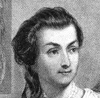Mrs. John Adams (Abigail Smith)
-
 Mrs. Robert R. Livingston
Mrs. Robert R. Livingston -
.jpg) Mrs. Chauncey Goodrich (Mary Ann Wolcott)
Mrs. Chauncey Goodrich (Mary Ann Wolcott) -
.jpg) Mrs. Robert Morris (Mary White)
Mrs. Robert Morris (Mary White) -
.jpg) Julia Stockton Rush
Julia Stockton Rush -
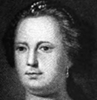Deborah Read
-
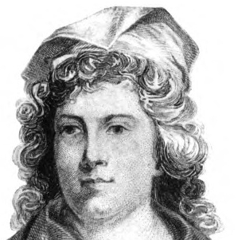Sarah Franklin Bache
-
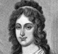Mrs. Charles Carroll (Harriet Chew)
-
 Martha Jefferson
Martha Jefferson -
 Faith Trumbull
Faith Trumbull -
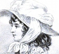Mrs. John Jay
-
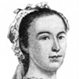Mercy Otis Warren
-
 Mrs. James Duane
Mrs. James Duane -
 Mary Silliman
Mary Silliman
Search OCLC WorldCat for this title.
Search Google Books for this title.
Green, Mary Anne Everett [Wood], ed. Letters of Royal and Illustrious Ladies of Great Britain, from the commencement of the twelfth century to the close of the reign of Queen Mary. 3 vols., London: Colburn, 1846.
NOT:=correspondence. List is about half of the contents of volume two, with its total of 112 letters.
TOC: Cecilia Marchioness-dowager of Dorset to Thomas Cromwell; Elizabeth Newhouse to Mr. Roger Wright; Anne Treadwell to Henry VIII; Margaret, Queen of Scotland to Cardinal Wolsey; Anne Countess-dowager of Oxford to Cardinal Wolsey; The Same to Duke of Norfolk; Lady Anne Bolyn to Henry VIII; Margaret, Queen of Scotland to Henry VIII; The Same to Cardinal Wolsey; The Same to Doctor Magnus; Elizabeth Countess-dowager of Oxoford to Cardinal Wolsey; The Same to the Same; Agnes Dowager-Duchess of Norfolk to Cardinal Wolsey; Princess Mary to Cardinal Wolsey; Isabel Jordan, Abbess of Wilton to Cardinal Wolsey; Elizabeth Lady Tailbois to Cardinal Wolsey; The Same to Mr. Thomas Heneage; Lady Anne Boleyn to Cardinal Wolsey; The Same to the Same; Margery Calthorpe, Abbess of Brosyard to Cromwell; Margaret Vernon to Cromwell; The Same to the Same; The Same, as Prioress of Little Marlow, to the Same; The Same to the Same; Elizabeth Countess of Kildare to Henry VIII; The Same to the Earl of Shrewsbury; Princess Mary to Cromwell; Anne Countess Dowager to Oxford to Cromwell; Lady Storkey and the Convent of Stratford to Cromwell; The Nuns of Stratford to Cromwell; Margaret Marchioness-dowager of Dorset to Cromwell; Lady Anne Boleyn to Lady Wingfield; Honor Viscountess Lisle to Cromwell; The Same to the Same; Anne Lady Weston to Lady Lisle; Honor Viscountess Lisle to Cromwell; The Same to the Same; Mary Queen-dowager of France to Viscount Lisle; Elizabeth Staynings to Lady Lisle; Elizabeth Lady Wheathell to Lady Lisle; Elizabeth Hills to Cromwell; Elizabeth George to her Son, John George; Gertrude Marchioness of Exeter to Henry VIII; Catherine Lady Blount to Cromwell; Margaret Marchioness-dowager of Dorset to Cromwell; The Same to the Same; Elizabeth Countess of Worcester to Cromwell; Anne Countess-dowager of Oxford to Cromwell; The Same to the Same; The Same to Secretary Cromwell; Anne Countess-dowager of Oxford to Cromwell; Lady Catherine Daubeney to Secretary Cromwell; Lady Elizabeth Dacres to Lady Dacres; Margaret Queen of Scotland to Henry VIII; The Same to Secretary Cromwell; Jane Basset to Lady Lisle; The Same to the Same; The Same to the Same; The Same to the Same; The Same to the Same; Elizabeth Rebe, Abbess of West Malling, to Mr. Thomas Wyat.
Search OCLC WorldCat for this title.
Search Google Books for this title.
Green, Mary Anne Everett [Wood], ed. Lives of the Princesses of England from the Norman Conquest [to 1670]. London: Colburn, 1849-55; Longman; Colburn, 1857. 4 vols., London: Longman, 1867.
TOC: Elizabeth, Eldest Daughter of James I; Sophia, Fourth Daughter of James I; Mary, Eldest Daughter of Charles I; Elizabeth, Second Daughter of Charles I. Illustrations: Elizabeth, Daughter of Charles I; Mary, Princess of Orange.
Search OCLC WorldCat for this title.
Search Google Books for this title.
Greenwood, Alice Drayton. Lives of the Hanoverian Queens of England. London: Bell; New York: Macmillan, 1909-11.
TOC: Sophia Dorothea of Celle, Wife of George I; Caroline of Ansach, Queen of George II. Amelia Elizabeth Caroline of Brunswick, Queen of George IV. Adelaide of Saxe-Meiningen, Queen of William IV.
Search OCLC WorldCat for this title.
Search Google Books for this title.
Grégoire, Pierre Marie, and Charles Piccirillo. Maidens of Hallowed Names. Woodstock, MD: College of the Sacred Heart, 1881; 1882. New York: Kenedy [sic]/Excelsior Catholic Publishing, 1883; 1889; 1893; 1901; 1905.
TOC: Saint Agnes; Saint Gertrude; Saint Rose of Lima; Saint Katharine of Siena; Saint Genevieve; Saint Martina; Saint Clara; Saint Bibiana; Blessed Marguerite Marie; Saint Barbara; Saint Zita; Saint Cecilia; Saint Teresa; Conclusion.
Women saints.
Search OCLC WorldCat for this title.
Search Google Books for this title.
Gribble, Francis Henry. Women in War. London: Low, Marston, 1916. London and New York: Dutton, 1917.
TOC: I. The Amazons in ancient and modern times - Miss Beebe Beam - Senora Loreta Velasquez - Women who have served in the British Army, disguising their sex - Christian Davies - Hannah Snell - Mary Anne Talbot - Dr. James Barry, Inspector-General of Army Hospitals ; II. The Amazons of France - The real Mme. Sans-Gene - Bernadotte's admiration for her - Her ultimate marriage to a gendarme - Virginie Ghesquiere - Angelique Brulon - Marie Schellinck - Liberte Barrau - Felicite and Theophile Fernig, the heroines of Jemmappes - Felicite's romantic marriage - Theophile's secret sorrow ; III. The Vivandieres - Heroines of the Retreat from Moscow - Heroines of the War from 1870-71 - Annette Drevon - Jeanne Bonnemere - Madame Jarrethout, the Mother of the Volunteers - Louise de Beaulieu. ; IV. The courageous exploit of Mlle Juliette Dodu, of the Telegraph Service, in the Franco-German War - Mlle Wipper and Mlle Meyer of the same service ; V. Women in the Russian Campaign of 1812 - Elizabeth Hatzler, the dragoon - Josephine Trinquart, the cantiniere - Women at the crossing of the Beresina - Nidia, the mistress of General Montbrun - Adventures of the actresses at the Moscow theatre - Mme Verteuil - Aurore de Bursay - The Reminisicences of Mme Domergue ; VI. Louise Fusil of the Moscow Theatre - Her performance before Napoleon during the occupation - Her return with the Grande Armee - Her narrow escape from death - Her adoption of a foundling - Nadeje, the Orphan of Vilna - Her dramatic talents and untimely death ; VII. Deborah - Boadicea - Genevieve - Fredegonde - Hermangarde - Julienne de Breteuil - Eleanor of Guienne - Guirande de Lavaur - Jeanne de Montfort ; VIII. Matilda of Tuscany - How she brought the Emperor to Canossa - Jeanne d'Arc - The state of France during her childhood - Voices and Visions - Her interview with Robert de Baudricourt - Summoned to the King at Chinon - Inquiries of the ecclesiastics into her bona fide - The examiners satisfied and the Maid launched upon her mission ; IX. The nature of the Maid's enterprise - The march to Orleans - Orleans entered - The English siege-works attacked - The siege raised ; X. Theological treatises on the Maid's mission - Disputes between rival historians as to her military capacity - The power of faith - The march to Reims and the coronation of the King of France ; XI. After the coronation - Vicissitudes of fortune - Failure of the attack on Paris - Rival prophetesses - Capture of the Maid at Compiegne - Failure of the French to ransom her - Her trial and execution at Rouen ; XII. False Maids arise after Jeanne's death - Jeanne de Armoises - The Maid of Sarmaize - The Maid of Le Mans - Other women fighters - Isabeau de Lorraine - Marguerite de Bressieux - Jeanne Hachette - The Lady of Bretigny ; XIII. End of the Middle Ages - Wars of the Roses - Queen Margaret - Her exploits in the field - Her abdication and sorrowful old age ; XIV. The wars of religion at the time of the Reformation - Women who helped in the defense of besieged cities - Ameliane du Puget - Jeanne Maillotte - Others - Louise Labe, the poetess - Kenau Hasselaar - Her services during the siege of Haarlem by the Spaniards ; XV. The wars of the Fronde - The Fronde of the Parlement and the Fronde of the Noble Lords - Part played in the war by Mlle de Montpensier - Her friendship for the great Conde - Her dash for Orleans - Her return to Paris ; XVI. Attack on Paris by Turenne - Mlle de Montpensier points the guns on his army - Disappointment of her matrimonial ambitions - Peace concluded without her consent - Fear, flight and nervous breakdown ; XVII. Madame de Longueville, sister of the great Conde - Her attempt to raise Normandy - Her escape from Dieppe - Her defense of Bordeaux - Her repentance in her old age, and her devout religious observances ; XVIII. The insurrection in La Vendee - Various women warriors - Mme de Larochejaquelein - Success and failure - The crossing of the Loire ; XIX. The check at Granville - The check at Angers - Dispersal of the royalist army - Mme de Larochejaquelein in hiding - Thermidor and the subsequent amnesty ; XX. The Duchesse de Berry - Her attempt to raise La Vendee for the Comte de Chambord - Failure of her friends to dissuade her - The rising - Defeat - Mme de Berry seeks a hiding place at Nantes ; XXI. Mme de Berry in hiding - Her betrayal by the Jew Deutz - Her discovery in a secret chamber by the gendarmes - Her arrest and removal to prison - How Deutz received the reward of his treachery ; XXII. The Empress Eugenie - Did she "make" the Franco-German War? - The news of Sedan in Paris - Outbreak of the Revolution - Flight of the Empress from the Tuilieres - Her appeal to Dr. Evans - The drive to Deauville - The crossing of the Channel in Sir John Burgoyne's yacht ; XXIII. Catherine the Great of Russia - Her civil war against her husband - His discomfiture, arrest, abdication, and death in prison - Was he murdered there? - Was Catherine responsible? ; XXIV. Spanish wars - The Maid of Saragossa - The shooting of Cabrera's mother and other hostages in the Carlist War - The nuns of Seville - The termagants of Barcelona ; XXV. Queen Cristina of Spain and General Espartero - General Leon's attempt to kidnap Queen Isabella - Fighting on the palace staircase - Gallant defense by thr Halberdiers - Capture and execution of General Leon - Further fighting in 1854 and 1866 - The Revolution of 1868 ; XXVI. Women in war in India - Cawnpore - Details of the seige and massacre ; XXVII. The First Afghan War - The retreat through the Khyber Pass - The massacre - Extracts from Lady Sale's Diary ; XXVIII. Woman as pacifist - Baroness von Suttner as controversialist and novelist - The value of Die Waffen Nieder! ; XXIX. Florence Nightingale - How she prepared herself for her life's work, and how she performed it - Her courage - Her thoroughness - Her modesty - Her supreme title to immortal fame .
Search OCLC WorldCat for this title.
Search Google Books for this title.
Gribble, Leonard Reginald. Queens of Crime. London: Hurst & Blackett, 1932.
TOC: Mary Bateman; The Marquise de Brinvilliers; Elizabeth Brownrigg; Gesina Gottfried; Catherine Hayes; Constance Kent; Marie Lafarge; Euphasie Mercier; Anna Zwanziger.
Search OCLC WorldCat for this title.
Search Google Books for this title.
Griffith, Rev. Patrick, Christian Mothers: Saviours of Society. Dublin: Browne & Nolan, 1923. 2d ed., 1926.
TOC: The Mother of God; The Mother of the Machabees; St. Monica, Mother of St. Augustine; Donna Anna Catherine Cavalieri, Mother of St. Alphonsus Liguori; St. Jane Fraces Frémyot de Chantal; The Mother of Cardinal Vaughan; The Irish Mother.
Not in British Library.
Search OCLC WorldCat for this title.
Search Google Books for this title.
Griggs, Edward Howard. Syllabus of a Course of Six Lectures on Types of Womanhood Studied From Autobiography. Philadelphia: American Society for the Extension of University Teaching, 1900.
NOT:=lectures, typology.
Search OCLC WorldCat for this title.
Search Google Books for this title.
Griswold, Rufus Wilmot. Female Poets of America. Philadelphia: Baird, 1847; 1852; 1853; Carey & Hart, 1849; Parry & McMillan, 1854; 1856; 1858; 1859; Moss, 1860; 1863. New York: Miller, 1873; 1874; 1877; Collier, 1869; 1877; 1892.
TOC: Mrs. Anne Bradstreet; Mrs. Mercy Warren; Mrs. Elizabeth Graeme Ferguson; Mrs. Anna Eliza Bleecker; Mrs. Phillis Wheatley Peters; Mrs. Susannah Rowson; Mrs. Margaretta V. Faugeres; Miss Eliza Townsend; Mrs. Lavinia Stoddard; Miss Hannah F. Gould; Mrs. Caroline Gilman; Mrs. Sarah Josepha Hale; Mrs. Anna Maria Wells; Miss Maria James; Mrs. Julia Rush Ward; Mrs. Lydia Huntley Sigourney; Mrs. Katharine A. Ware; Mrs. Jane L. Gray; Mrs. Sophia L. Little; Mrs. Lydia Maria Child; Mrs. Louisa J. Hall; Mrs. Eliza L. Follen; Mrs. Frances H. Green; Mrs. Jessie G. McCartee; Miss Cynthia Taggart; Mrs. Francesca Pascalis Canfield; Miss Elizabeth Bogart; Mrs. Mary E. Brooks; Mrs. Margaret St. Leon Loud; Mrs. Emma C. Embury; Mrs. Emma C. Embury; Miss Elizabeth Margaret Chandler; Lucretia and Margaret Davidson; Mrs. Mary E. Hewitt; Mrs. Susan R. A. Barnes; Mrs. Sarah Helen Whitman; Mrs. Elizabeth Oakes-Smith; Mrs. E. C. Kinney; Mrs. Elizabeth F. Fillet; Mrs. Julia H. Scott; Mrs. Anna Peyre Dinnies; Mrs. Ann S. Stephens; Mrs. A. R. St. John; Mrs. Sarah Louisa P. Smith; Mrs. Sophia Helen Oliver; Miss Mary E. Lee; Mrs. Catherine H. Esling; Mrs. Caroline M. Sawyer; Mrs. Margaret L. Bailey; Mrs. Laura M. Thurston; Miss Martha Day; Miss Mary Ann Hanmer Dodd; Miss Anne C. Lynch; Mrs. Emily Judson; Mrs. Elizabeth Jesup Eames; Mrs. Emeline S. Smith; Miss S. Margaret Fuller; Mrs. Lydia Jane Peirson; Mrs. Jane Taylor Worthington; Mrs. Sarah Anna Lewis; Mrs. Anna Cora Mowatt; Mrs. Mary Noel Meigs; Mrs. Frances Sargent Osgood; Miss Lucy Hooper; Mrs. Sarah Edgarton Mayo; Miss Sarah L. Jacobs; Mrs. Luella J. B. Case; Mrs. Sarah T. Bolton; Miss Hannah J. Woodman; Miss Susan Archer Talley; Mrs. Rebecca S. Nichols; Mrs. Julia Ward Howe; Mrs. Amelia B. Welby; Mrs. Cath. Warfield and Mrs. Eleanor Lee; Miss Susan Pindar; Miss Carline May; Mrs. Emily Neal; Mrs. Caroline H. Chandler; Mrs. Eliza L. Sproat; Mrs. Harriet Liszt (Winslow); Mrs. Juliet H. L. Campbell; Miss Elise Justine Bayard; Miss Lucy Larcom; Edith May; Misses Frances A. And Metta V. Fuller; Misses Alice and Phoebe Carey; Miss Mary Lockhart Lawson; Mrs. Maria Lowell; Miss Sarah Jane Clarke; Miss Anne H. Phillips.
-
 J. Oakes Smith
J. Oakes Smith -
 Frances S. Bogood
Frances S. Bogood -
 Lydia H. Sigourney
Lydia H. Sigourney -
 Emma C. Embury
Emma C. Embury -
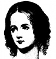Elizabeth F. Ellet
-
 Sarah J. Hale
Sarah J. Hale -
 Amelia B. Welby
Amelia B. Welby -
 Anne C. Lynch
Anne C. Lynch -
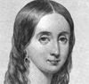Elizabeth C. Kinney
-
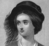Sarah J. Clarke
Search OCLC WorldCat for this title.
Search Google Books for this title.
Griswold, Rufus Wilmot. The Republican Court; or, American Society in the Days of Washington. With Twenty-One Portraits of Distinguished Women, Engraved from Original Pictures by Woolaston, Copley, Gainsborough, Stuart, Trumbull, Pine, Malbone, and Other Contemporary Painters. New York: Appleton, 1854; 1855; 1856; 1859; 1864; 1866; 1867; 1868; 1879.
TOC: Peace; The Convention; The Year of Suspense; The Triumphal Progress; The Inauguration; New York Metropolitan; The Eastern Tour; The Season of Eighty-Nine and Ninety; Removal of the Government; Society in Philadelphia; The Southern Tour; Discontent and Sedition; Life in the Capital.


Search OCLC WorldCat for this title.
Search Google Books for this title.
Grosvenor House. Historical Loan Exhibition. Memorials of Some Notable Women. Catalogue. London: Odhams, 1905.
NOT:=portraits, catalogue.
Search OCLC WorldCat for this title.
Search Google Books for this title.
Guedalla, Philip. Bonnet and Shawl: An Album. New York: Putnam's; Crosby Gaige, 1928. London: Hodder & Stoughton, 1928; 1929; 1930.
TOC: Real: Jane Welsh Carlyle; Catherine Gladstone; Mary Arnold; Mary Anne Disraeli; Emily Tennyson; Emily Palmerston; Ideal: Lady Muriel James; Sophia Swinburne; Julie de Goncourt.
Search OCLC WorldCat for this title.
Search Google Books for this title.
Guerber, Helene Marie Adeline. Empresses of France. New York: Dodd, 1901; 1906.
One of several group studies of the consorts of the Napoleons: Josephine, Marie Louise, Eugénie.
-
 Josephine in 1805
Josephine in 1805 -
 Bonaparte and Eugene de Beauharnais
Bonaparte and Eugene de Beauharnais -
 Josephine
Josephine -
 Josephine's Bedroom at Fontainbleau
Josephine's Bedroom at Fontainbleau -
 Marie Louise
Marie Louise -
 Marie Louise and the King of Rome, 1811
Marie Louise and the King of Rome, 1811 -
 Napoleon and the king of Rome
Napoleon and the king of Rome -
 The King of Rome, 1814
The King of Rome, 1814 -
 The Empress Eugenie
The Empress Eugenie -
 The Emperor, Empress, and Prince Imperial
The Emperor, Empress, and Prince Imperial -
 The Prince Imperial as a Cadet
The Prince Imperial as a Cadet -
 Eugenie, 1872
Eugenie, 1872
Search OCLC WorldCat for this title.
Search Google Books for this title.